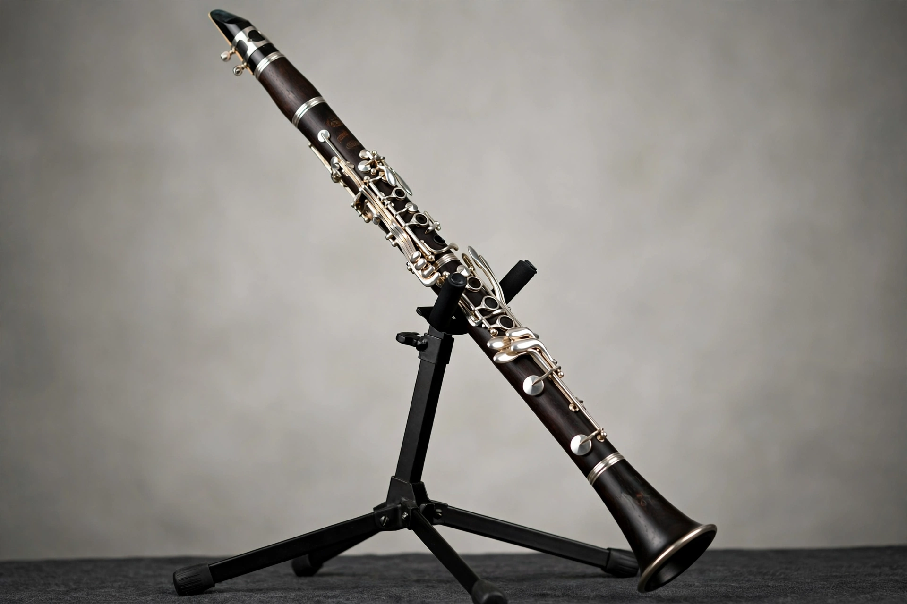

| Clarinet | |
|---|---|
| Classification | Wind, woodwind, single-reed aerophone |
| Inventor | Johann Christoph Denner (c. 1700) |
| Common types | B♭ soprano, A soprano, bass clarinet |
| Range | About 3½–4 octaves |
| Related | Chalumeau, basset horn, saxophone (single-reed cousin) |
The clarinet is a family of woodwind instruments with a single-reed mouthpiece and a predominantly cylindrical bore, giving it a distinctive, warm tone and an unusually wide range. The most common member, the soprano clarinet in B♭, is a standard instrument of orchestras, concert bands, and jazz ensembles.
The clarinet was developed around 1700 by the Nuremberg instrument maker Johann Christoph Denner from the earlier chalumeau, adding a register key that let the instrument overblow at the twelfth and greatly extended its range. Mozart championed the new instrument, writing his Clarinet Concerto (1791) for Anton Stadler. In the nineteenth century, Hyacinthe Klosé and Auguste Buffet adapted the Boehm key system, producing the fingering used on most clarinets today; German and Austrian players favor the alternative Oehler system.
The instrument consists of a mouthpiece with a cane reed, barrel, upper and lower joints with keywork, and a flared bell, usually made of grenadilla wood or, for student models, plastic resin. Because its bore is effectively a stopped cylindrical pipe, the clarinet overblows at the twelfth rather than the octave, and its sound is rich in odd harmonics — features that give its low (chalumeau) and middle (clarion) registers their contrasting colors.
Beyond Mozart, major clarinet works include concertos by Weber, Brahms's late chamber music with clarinet, and Stravinsky's Ebony Concerto. In jazz, the clarinet was a lead instrument of the swing era — Benny Goodman, the "King of Swing," and Artie Shaw were its stars — and it remains central to klezmer and traditional New Orleans jazz. Gershwin's Rhapsody in Blue opens with a famous clarinet glissando.
See also: Woodwind instrument, Benny Goodman, Single-reed instrument